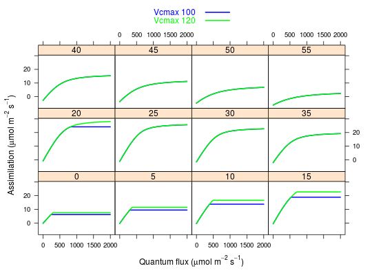
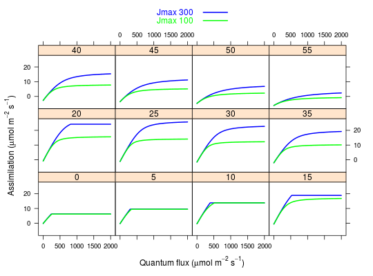
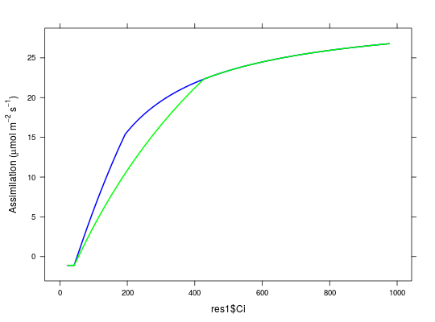

c3photo(Qp, Tl, RH, vcmax = 100, jmax = 180, Rd = 1.1, Catm = 380, O2 = 210, b0 = 0.08, b1 = 5, theta = 0.7, StomWS = 1, ws = c("gs", "vmax"))
Simulates coupled assimilation and stomatal conductance based on Farquhar and Ball-Berry.
~~further notes~~ ## Additional notes about assumptions
Farquhar (1980) Ball-Berry (1987)
## Testing the c3photo function ## First example: looking at the effect of changing Vcmax Qps <- seq(0,2000,10) Tls <- seq(0,55,5) rhs <- c(0.7) dat1 <- data.frame(expand.grid(Qp=Qps,Tl=Tls,RH=rhs)) res1 <- c3photo(dat1$Qp,dat1$Tl,dat1$RH) ## default Vcmax = 100 res2 <- c3photo(dat1$Qp,dat1$Tl,dat1$RH,vcmax=120) ## Plot comparing alpha 0.04 vs. 0.06 for a range of conditions xyplot(res1$Assim + res2$Assim ~ Qp | factor(Tl) , data = dat1, type='l',col=c('blue','green'),lwd=2, ylab=expression(paste('Assimilation (', mu,mol,' ',m^-2,' ',s^-1,')')), xlab=expression(paste('Quantum flux (', mu,mol,' ',m^-2,' ',s^-1,')')), key=list(text=list(c('Vcmax 100','Vcmax 120')), lines=TRUE,col=c('blue','green'),lwd=2))
## Second example: looking at the effect of changing Jmax ## Plot comparing Jmax 300 vs. 100 for a range of conditions res1 <- c3photo(dat1$Qp,dat1$Tl,dat1$RH) ## default Jmax = 300 res2 <- c3photo(dat1$Qp,dat1$Tl,dat1$RH,jmax=100) xyplot(res1$Assim + res2$Assim ~ Qp | factor(Tl) , data = dat1, type='l',col=c('blue','green'),lwd=2, ylab=expression(paste('Assimilation (', mu,mol,' ',m^-2,' ',s^-1,')')), xlab=expression(paste('Quantum flux (', mu,mol,' ',m^-2,' ',s^-1,')')), key=list(text=list(c('Jmax 300','Jmax 100')), lines=TRUE,col=c('blue','green'),lwd=2))
## A/Ci curve Ca <- seq(20,1000,length.out=50) dat2 <- data.frame(Qp=rep(700,50), Tl=rep(25,50), rh=rep(0.7,50)) res1 <- c3photo(dat2$Qp, dat2$Tl, dat2$rh, Catm = Ca) res2 <- c3photo(dat2$Qp, dat2$Tl, dat2$rh, Catm = Ca, vcmax = 70) xyplot(res1$Assim ~ res1$Ci, lwd=2, panel = function(x,y,...){ panel.xyplot(x,y,type='l',col='blue',...) panel.xyplot(res2$Ci,res2$Assim, type='l', col = 'green',...) }, ylab=expression(paste('Assimilation (', mu,mol,' ',m^-2,' ',s^-1,')')))